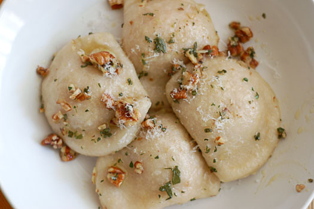

Ingredients
Dough
1 cup warm water
3 tablespoons cilantro, chopped (You can substitute cilantro with basil.)
2 cups white, unbleached organic flour
2 cup whole wheat organic flour
1 teaspoon of favorite all-purpose seasoning
sea salt to taste
Filling
3 medium potatoes, peeled and cooked. Salt to taste.
2 tablespoons cilantro or dill, chopped
Mash potatoes and add cilantro or dill.
Let it chill to room temperature.
Directions:
Refried Black Beans
- To make dough, place water and cilantro (or basil) in the food processor and blend until cilantro has been finely chopped up.
- Add salt, seasoning and flour, one cup at a time. Pulse until flour is blended in.
- Transfer dough to a flat surface and knead until smooth, adding a bit of flour if needed.
- Divide dough into four equal parts. Roll out each part into a thin sheet.
- Use a round glass to cut out circles.
- You will have shreds of dough left over. Set them aside, and when you are done with all four parts, combine altogether and repeat steps as
for all other parts, until all dough has been used.
- Use a teaspoon to distribute chilled potatoes unto each circle.
- There are two different ways you can shape ravioli: half moons or circles.
- To make a half moon, place potatoes away from the middle. Flip the dough to cover it, and pinch with your fingers, until dough has been
tightly sealed.
- To make round ravioli: place mashed potatoes in the middle of the circle, place second circle over potatoes, then pinch around the circle
with your fingers, until dough has been tightly sealed.
- Bring water to boil (about half of the pot that you choose to use). Once water is boiling, add ravioli.
- Bring to boil and reduce heat to medium.
- Half moon ravioli need no more than 10-11 minutes, whereas round ravioli will need 12-13 minutes to cook through.
- Once ravioli has been cooked, pull out with a ladle or a strainer and serve immediately.
- Add a dollop of Toffuti vegan “sour cream” for great taste.